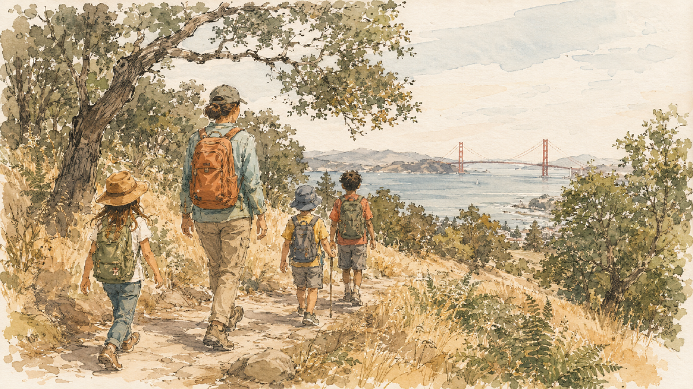

Berkeley Is Your Backyard
A neighborhood club for getting kids outdoors
The Berkeley Natural Explorers Club helps Berkeley kids get out into the city's parks and trails — building belonging, well-being, and a little leadership along the way. It started with one family-led hike and a simple hunch: that kids who explore their city come to feel it belongs to them. This is the front door. Below is the story, what we've learned, and four companion guides to get you out the door.

The Idea
We started with three simple goals, and they still guide everything we do:
-
Feel at home in your own city
Every kid deserves to feel that all parts of Berkeley — its hills, parks, and hidden paths — belong to them.
-
Learn to explore it safely
Reading a trail, crossing a road, finding the way: small skills that let kids enjoy the city's natural beauty on their own two feet.
-
Grow into leaders
Looking out for a younger kid, leading the way, sharing what you know — real leadership, with equity, inclusion, and health woven through.
How It Started
In the spring of 2023, a couple of Thousand Oaks Elementary families and their school's family-resources coordinator mapped a single hike — from Thousand Oaks Elementary, up the Indian Rock Path, to the quiet waterfall at John Hinkel Park. It wove together a little local history, some plant identification, a real rock to climb, and a few quiet minutes by the water.
The plan was modest — a handful of hikes. What we couldn't have predicted is that a small core of kids and parents kept choosing it, week after week, season after season. The group grew up together and kept exploring: the Albany Bulb shoreline, the Berkeley Marina, Lake Anza and Jewel Lake, Wildcat Canyon, the UC Berkeley campus, the Tilden fire trails. The pilot didn't end. It transformed.

What We've Learned
Three things surfaced over those years that we didn't set out to find — but that turned out to matter as much as the goals we started with.
-
Older kids are a bridge across the middle-school jump
When a kid who'd already started middle school came back to hike with the younger ones, their dread of sixth grade shrank — it became a real place with a trusted face on it. It's a whole page now: Bridge to Middle School.
-
Nature settles the grown-ups too
Parents who hike together build the kind of easy trust that makes the rest of family life smoother. The adults aren't sacrificing for the kids out there — they're getting something they need. It's part of why two families on one trail works so well.
-
Drawing what you see runs deep
Close observation, translated through a pencil, reaches kids that hiking alone doesn't — and connects them to a long naturalist tradition. That's the heart of Your First Nature Drawing.
Start Here
Four short companion guides make up this site. Start wherever you like — the series-nav bar at the top of every page links them all, so you can wander between them the same way you'd wander a trail. If you only open one, make it the hike.
-
The Hike
Our founding route, mapped stop by stop: Thousand Oaks Elementary up the Indian Rock Path to the John Hinkel Park waterfall — history, plant ID, and a real rock to climb. The best place to begin.
-
Your First Nature Drawing
A gentle guide to helping a child make their very first nature drawing at the waterfall — and grow it into a journal they'll keep.
-
Reading Buddies
Take your child and their younger reading buddy on the hike together, and let the older one lead the way. Two kids, two families, one easy morning.
-
Bridge to Middle School
Bring an older kid along as a low-key trail mentor to ease a younger one's jump from fifth grade to middle school.
Come Explore
You don't need a membership, a fee, or a plan — just a free morning and a little curiosity. Pick a guide, pick a Saturday, and head out. There's a whole East Bay out there, and it belongs to your kids as much as anyone's.